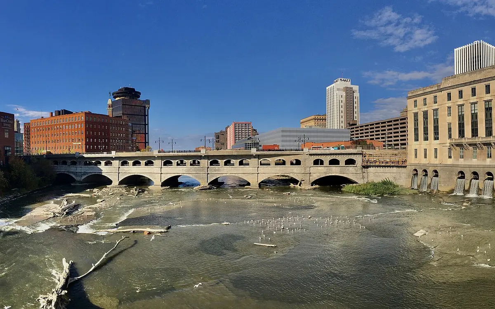

Environmental science writing
Studies, monitoring data or environmental claims need a clear explanation. Explore the evidence walkthrough, source handling and writing formats.
Explore this service
Writing and SEO services
Research-driven writing for environmental and technical subjects. SEO content and website audits that connect useful information to the next step.
Start with the assignment
Studies, monitoring data or environmental claims need a clear explanation. Explore the evidence walkthrough, source handling and writing formats.
Explore this serviceDocumentation and expert knowledge need to become useful content. Explore the reader demonstration, content assets and technical review workflow.
Explore this serviceA new or existing page needs to answer a useful search. Explore the intent planner, refresh options and publishing handoff.
Explore this serviceThe website needs a diagnosis before more content or design work. Explore the repair-priority demonstration and a report example.
Explore this serviceYour team needs research, drafting or substantive editing within its own briefs, voice and review process. Start with one assignment, then agree volume and workflow.
Discuss an agency assignmentChoose your starting point
Understand what needs fixing
Scoped SEO audits of search foundations, content and inquiry flow, with page-specific findings, repair priorities and implementation acceptance checks.
Explain complex evidence
Environmental science and sustainability articles, research summaries and web copy with source review, clear explanations and careful treatment of evidence.
Explain your product or service
Technical B2B articles, product and service pages, case studies and thought leadership developed from documentation, expert input and a clear review workflow.
Build or improve search content
SEO articles, service pages and content refreshes built around search intent, subject research, source support, internal links and a useful next step.
Anonymized audit example
Follow the review of broken page paths, conflicting claims and gaps in product explanations—from observation to recommended repair.
Compare the options
How projects start
Projects can include web copy, interview-led thought leadership, source review, substantive editing, fact-checking support and overflow work within your editorial process.
Your next step
A draft, brief, source library or description of the problem is enough to begin.